ICMP Flood
This writeup shows how Kali Linux acts as the attacker and Ubuntu Server acts as the target on an isolated host-only network. The goal was to generate baseline ICMP traffic, trigger an ICMP flood, perform stealth scans, capture the traffic with tcpdump and Wireshark, and verify detection with Snort.
Lab Setup
The lab uses a Kali Linux attacker machine and an Ubuntu Server target configured on a host-only network so traffic can be generated and observed in an isolated environment without outside noise interfering with the test.
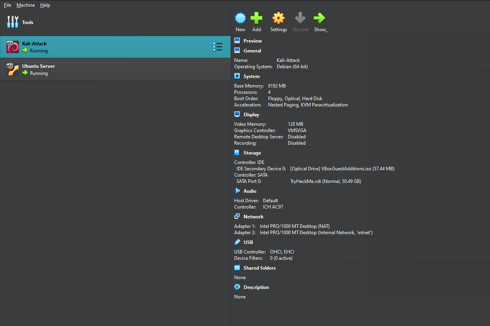
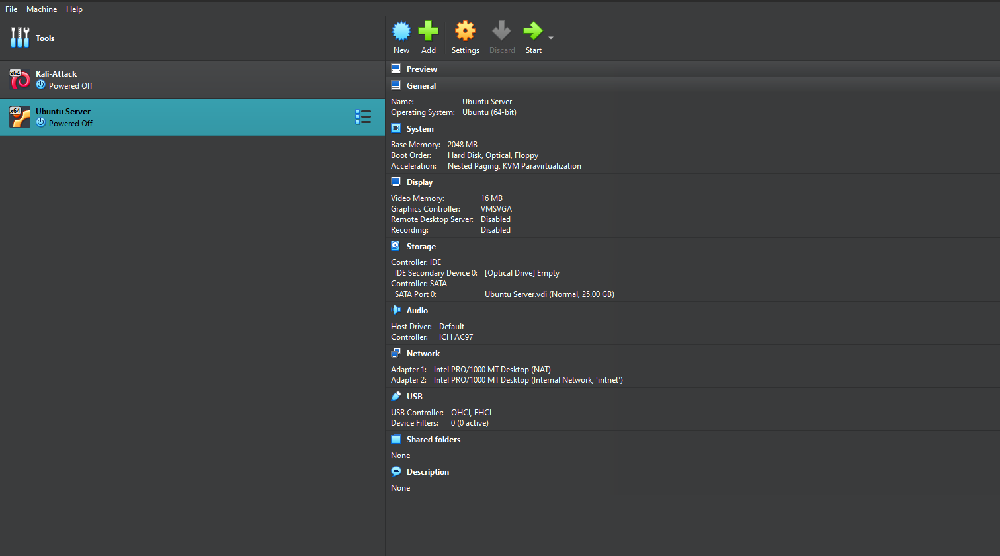
Network / IP Verification
The interfaces were reset and assigned static addresses to keep the attacker and target on the expected host-only subnet before any traffic generation began.
sudo ip addr flush dev enp0s8
sudo ip link set enp0s8 down
sudo ip link set enp0s8 up
sudo ip addr add 192.168.56.106/24 dev enp0s8
ip a
sudo ip addr flush dev eth1
sudo ip link set eth1 down
sudo ip link set eth1 up
sudo ip addr add 192.168.56.100/24 dev eth1
ip a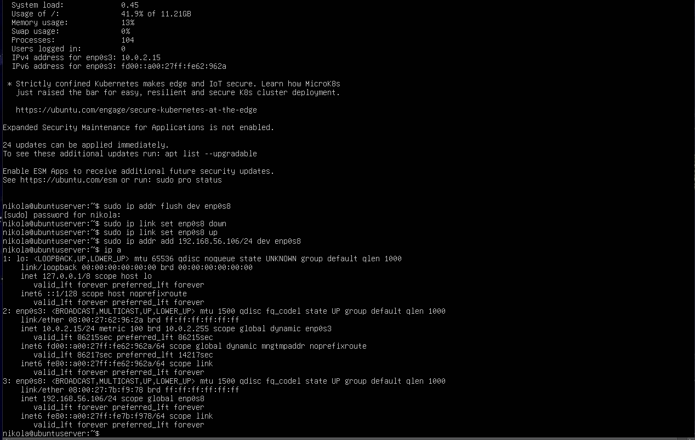
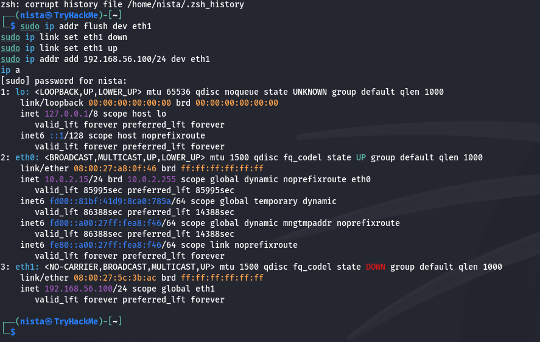
Connectivity Test
A simple ping test was used to confirm that Kali could reach the Ubuntu target before the monitoring and attack steps were started.
ping 192.168.56.106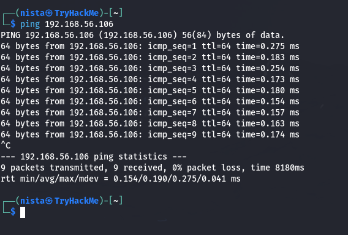
My Snort Rules
These rules define the protocol being watched, the traffic direction toward the home network, the packet characteristics such as ICMP type or TCP flags, and the alert message and SID used when a match occurs. The ICMP and SYN rules also include thresholds so repeated behavior triggers alerts instead of every single packet creating noise.
nano /etc/snort/rules/local.rules
first we will try icmp
alert icmp any any -> $HOME_NET any (itype:8; msg:"ICMP Flood Detected"; detection_filter:track by_src, count 20, seconds 2; sid:1000007; rev:1;)
alert tcp any any -> $HOME_NET any (flags:S; msg:"SYN Scan Detected"; threshold:type both, track by_src, count 10, seconds 5; sid:1000006; rev:1;)
alert tcp any any -> $HOME_NET any (flags:0; msg:"NULL Scan Detected"; sid:1000003; rev:1;)
alert tcp any any -> $HOME_NET any (flags:F; msg:"FIN Scan Detected"; sid:1000004; rev:1;)
alert tcp any any -> $HOME_NET any (flags:FPU; msg:"XMAS Scan Detected"; sid:1000005; rev:1;)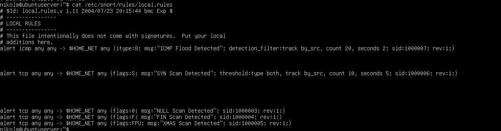
Traffic Capture Start
An initial ping was sent to produce clean baseline traffic before beginning the packet capture and alerting steps.
ping 192.168.56.106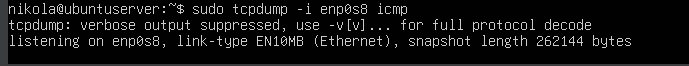
Normal ICMP Behaviour
Baseline ICMP traffic was observed with tcpdump to identify normal request and reply patterns before increasing the packet rate.
sudo tcpdump -i enp0s8 icmp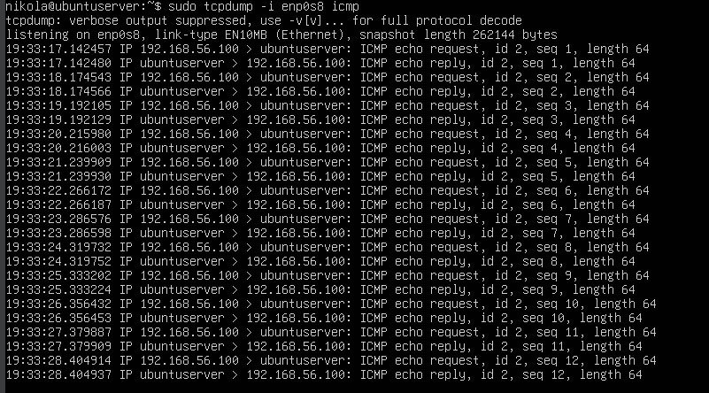
Starting PCAP Capture
A full packet capture was started so the traffic could be saved and reviewed later in Wireshark after the attack was complete.
sudo tcpdump -i enp0s8 -w capture_flood.pcap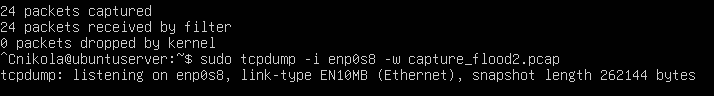
Starting Snort
Snort was started in a second terminal so the console alerts could be monitored live while packet generation continued in the first terminal.
sudo snort -A console -c /etc/snort/snort.conf -i enp0s8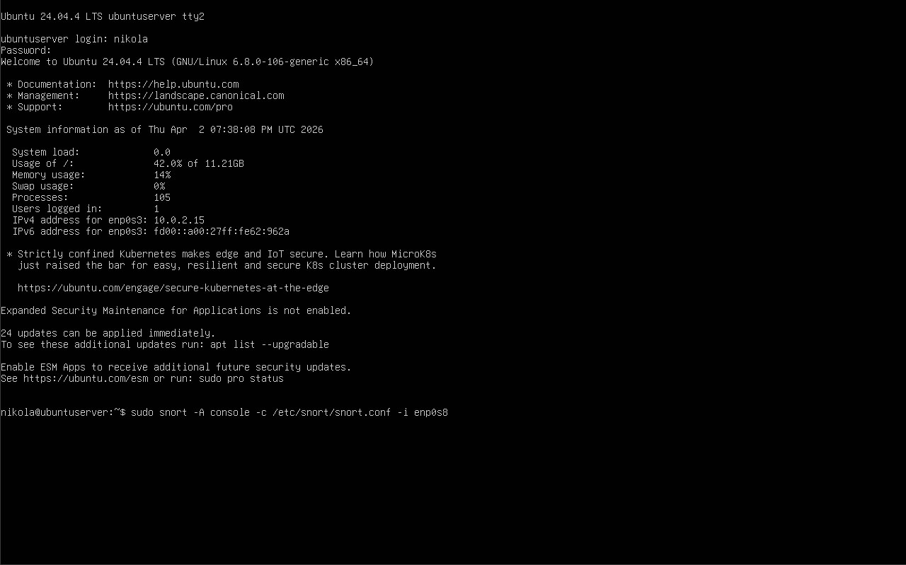
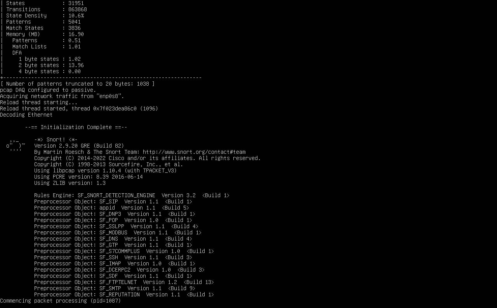
ICMP Flood Attack
The flood command kept the normal ping behavior but added a very small interval value with -i 0.002 so packets were sent much more rapidly and the target had to process a far higher rate of ICMP requests.
sudo ping -i 0.002 192.168.56.106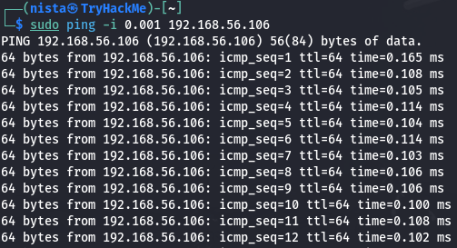
Detection Output
Snort generated alerts when the ICMP flood threshold was reached, showing repeated Echo Requests from the attacker toward the target.
sudo snort -A console -c /etc/snort/snort.conf -i enp0s8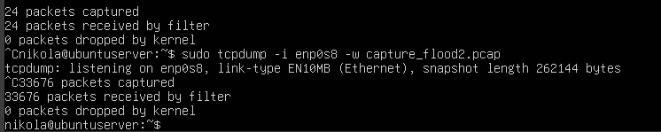
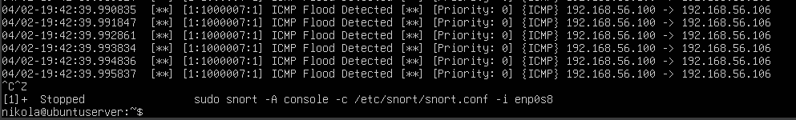
Verify Results
The generated packet captures were reviewed and transferred to confirm the files were saved correctly and could be opened in Wireshark for analysis.
ls -lh *.pcap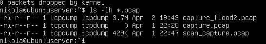
scp nikola@192.168.56.106:/home/nikola/capture_flood2.pcap .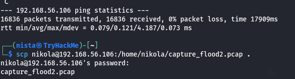
wireshark capture_flood2.pcap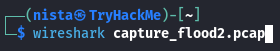
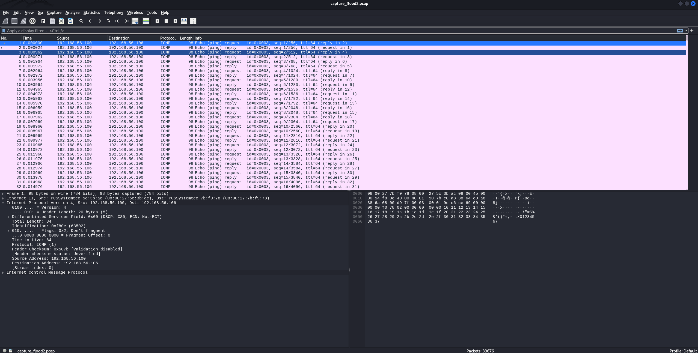
Stealth Scans
Stealth scans were performed to simulate reconnaissance activity against the Ubuntu target. These scans use unusual TCP flag combinations to gather information without completing a full connection. The resulting traffic was captured and compared against Snort alerts and Wireshark filters.
Starting PCAP Capture
sudo tcpdump -i enp0s8 -w capture_flood3.pcap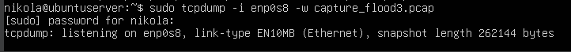
Starting Snort
sudo snort -A console -c /etc/snort/snort.conf -i enp0s8Snort was restarted for the scan phase before the Nmap probes were launched.
Scan Execution
Multiple Nmap scan types were launched to generate SYN, FIN, NULL, and XMAS traffic against the target system.
nmap -sS 192.168.56.106
nmap -sF 192.168.56.106
nmap -sN 192.168.56.106
nmap -sX 192.168.56.106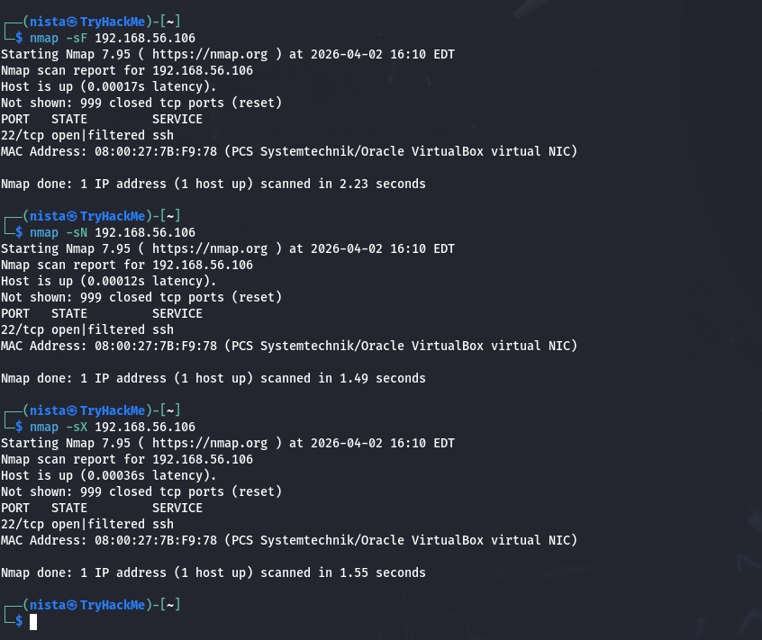
Snort Detection
Snort rules detected the abnormal TCP flag combinations and generated alerts for the scan activity during the capture window.
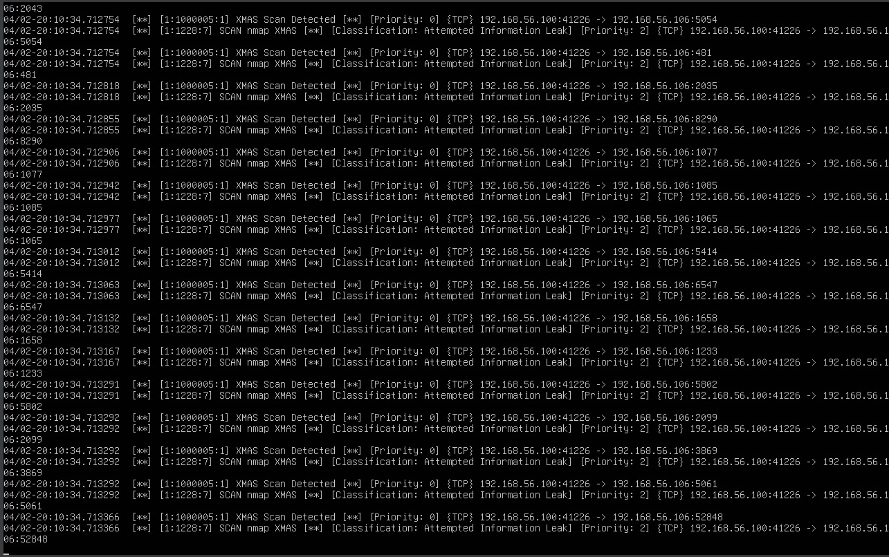
Transfer Capture
The scan capture was copied for analysis so the packets could be reviewed in Wireshark with display filters for each scan type.
scp nikola@192.168.56.106:/home/nikola/capture_flood3.pcap .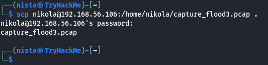
FIN Scan Filter
tcp.flags.fin == 1 && tcp.flags.syn == 0 && tcp.flags.ack == 0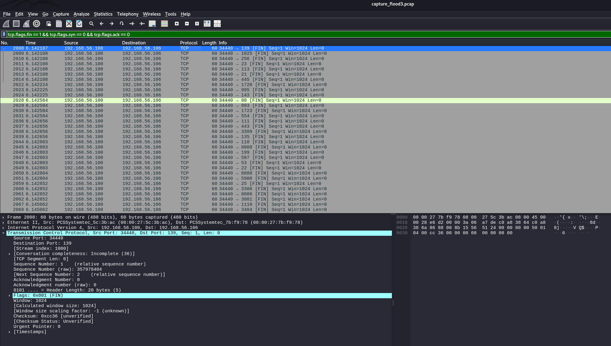
NULL Scan Filter
tcp.flags == 0x000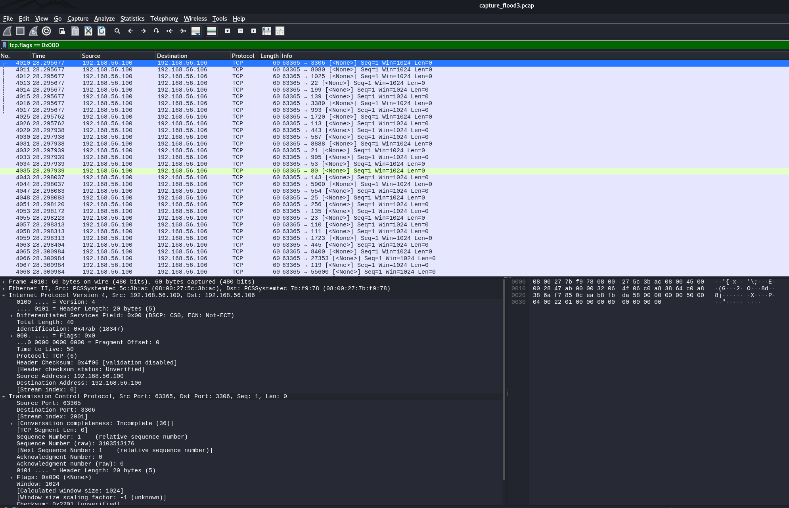
XMAS Scan Filter
tcp.flags == 0x029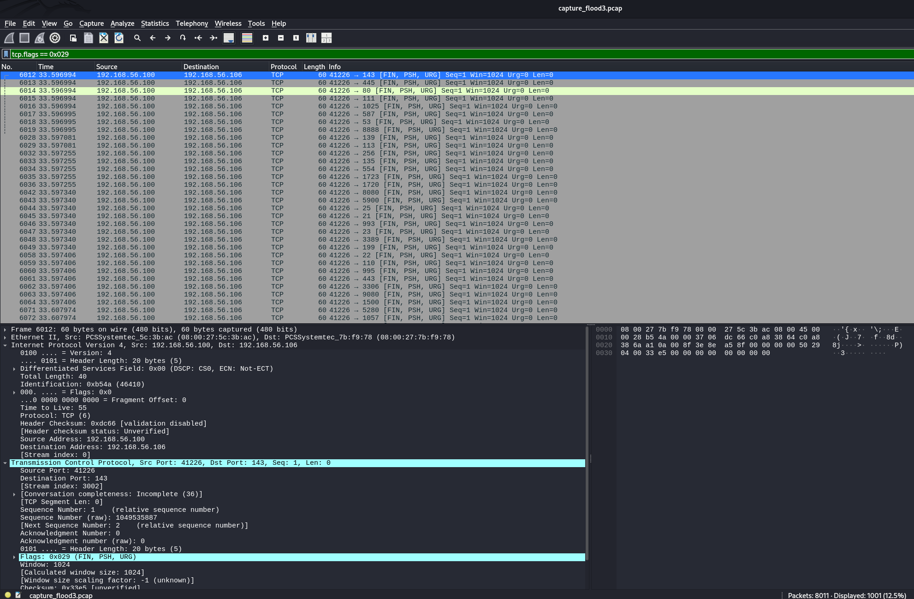
Conclusion
This lab showed how both denial-of-service style traffic and stealth reconnaissance scans can be generated, captured, and detected in a controlled environment. Using tcpdump, Wireshark, and Snort together made it possible to compare traffic and confirm that the custom rules worked. This simple lab demonstrates how traffic analysis and alerts can support network defense and investigation.